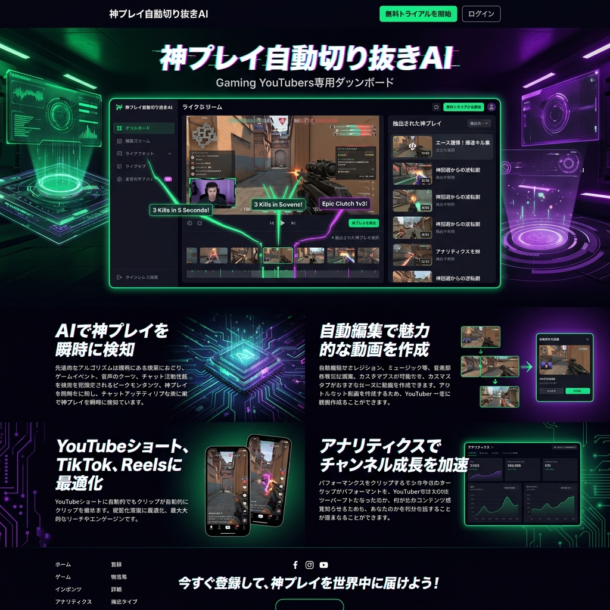

長時間の配信から、
「奇跡の瞬間」を自動抽出。
5時間に及ぶゲーム配信。GAMER-TUBE AIは、配信者の声のトーン、視聴者のコメントの沸騰度、ゲーム内のキルログをマルチモーダルで解析し、最も盛り上がったハイライト動画を全自動で生成するクリエイター支援AIです。

「切り抜き文化」が抱える編集の限界
現代のストリーマーにとって、YouTubeやTikTokへの「切り抜き動画（ハイライト）」の投稿は新規ファン獲得の生命線です。しかし、数時間のアーカイブを見直し、面白い場面を探してテロップを入れる作業は、配信者の体力を奪い、本質的なクリエイティビティを削り取っています。
熱狂を検知する、マルチモーダルAI
オーディオ・エモーション解析
配信者の「叫び声」「爆笑」「沈黙」などの音声波形を感情モデルで解析。ただの大きな音ではなく、本当の「見せ場」を抽出します。
チャット欄の沸騰度トラッキング
TwitchやYouTubeのチャット欄を自然言語処理で監視。「草」「ｗｗｗ」「神」といった特定の頻出キーワードと流れる速度から、視聴者の熱狂度をグラフ化。
ゲーム内イベント検知（Computer Vision）
画面内のUIを画像認識し、「ビクトリーロイヤル（勝利）」「連続キル」「HPがギリギリでの逆転」といったゲーム上の文脈をAIが直接理解してクリップします。
TikTokからYouTube Shortsへ。全自動最適化
抽出されたハイライトは、配信者の顔（ワイプ）とゲーム画面をAIが自動でクロップし、縦型の9:16フォーマットに再構成。さらに、強調すべきキーワードにだけ自動で派手なテロップとエフェクトを付与し、各SNSに最適な長さで一括出力します。
AIが「バズるサムネイル」をA/Bテスト
動画の切り抜きだけでなく、動画内で最も感情が爆発している瞬間の顔をキャプチャし、AIがクリック率（CTR）が最大化されるようなサムネイル画像を数パターン自動生成。YouTube上で密かにA/Bテストまで実行します。
Case Study | 登録者50万人のFPSストリーマー
毎日8時間の配信を行うプロゲーマー。これまで外注の編集マンに月額30万円を支払っていましたが、GAMER-TUBE AIを導入。配信終了と同時に3本のショート動画が自動生成され、そのままTikTokへアップロード。動画の供給量が3倍になり、新規視聴者の獲得コストが1/5に劇的改善しました。
クリエイターの「熱量」を増幅する装置
AIは人間の面白さを代替するものではありません。人間が放つ一瞬の輝きや熱量を、世界中のプラットフォームへ最速で拡散するための、最強のアンプリファイア（増幅器）なのです。